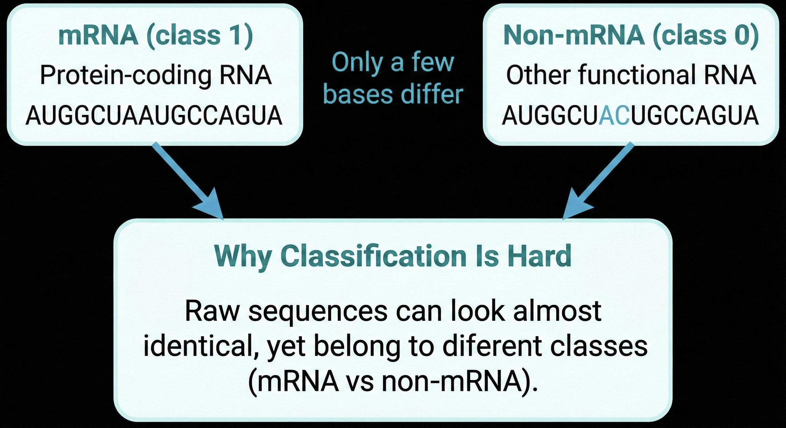
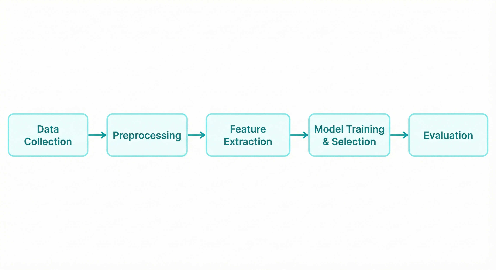

Collaboratively building a sequence-based ML pipeline to distinguish messenger RNA from other RNA types,
and leading the documentation, storytelling, and Random Forest implementation.
Course
Introduction to AI (NUS)
Role
Project Scaffolding · Random Forest · Report & Slides Lead
Team
4 members · Cross-functional backgrounds
Best Model81.63%Accuracy (Random Forest)
ROC-AUC0.8926Strong separation
My FocusStory + StructureNotebook, report, slides cohesion
Overview
The Context
mRNA is a special type of RNA that carries instructions for building proteins.
In this project, we were given thousands of RNA sequences and a simple question:
“Is this mRNA or not?”
On paper it sounds straightforward, but real genomic data is noisy, imbalanced,
and many sequences look deceptively similar.
To tackle this, we analyze sequences by breaking them into small chunks of 4 letters (called 4-mers)
to capture hidden biological patterns.
Goal
Build an end-to-end classification pipeline (data → features → models → evaluation)
Compare baseline and advanced models
Prioritise sensitivity to reduce missed mRNA sequences in practical biological analysis.

Contribution Overview
My Role in the Team
Our team included members with strong coding and management backgrounds. I leaned into my strengths in
structuring complex work, cross-disciplinary communication, and visual storytelling,
while also taking ownership of one of the core machine learning models.
Beyond individual contributions, I focused on ensuring that our technical work could be
understood, reproduced, and clearly communicated—both in presentation and in formal documentation.
Core Contributions
Project Scaffolding & Workflow Design: Structured the shared notebook and ML pipeline with clear sections and naming conventions.
Random Forest Model Ownership: Trained and evaluated RF on 4-mer features, benchmarking against other models and summarising key metrics.
Narrative, Reporting & Presentation Lead: Produced a story-driven deck + AAAI-formatted report to document methodology, experiments, and findings.
From Presentation Narrative → Academic Rigor
I treated communication as a design problem: the same underlying pipeline needed to work at different levels of abstraction—
clear takeaways in slides, and reproducible depth in the AAAI report.
Same pipeline, two lenses:
The implementation framework (left) communicates system flow at a glance, while the AAAI snapshot (right)
documents the same pipeline with academic rigor and reproducibility.
Pipeline
Workflow
An end-to-end pipeline from raw RNA sequences to evaluated classification models.
Data collection: FASTA-formatted RNA sequences (standard biological sequence format) for training and testing.
Preprocessing: Sequence cleaning and class imbalance handling using SMOTE to reduce bias.
Feature engineering: Primary 4-mer frequency representation, with alternative encodings explored for baseline comparison.
Training: Cross-validation and hyperparameter tuning to ensure robust generalisation.
Evaluation: Accuracy, F1, ROC-AUC, with emphasis on sensitivity–specificity trade-offs for practical use.

End-to-end ML pipeline used across all models
PERFORMANCE
Model Evaluation & Results
We evaluated multiple approaches to classify RNA sequences as mRNA vs non-mRNA.
Instead of picking the most complex model, we selected the best option based on
performance, robustness, and interpretability.
Step 1
Baseline screening (Logistic Regression)
Goal: identify which feature representation makes mRNA vs non-mRNA easiest to separate.
Logistic Regression
Baseline
Representation: Positional embedding
F1
0.55
Insight
Lowest signal
Embedding-based features underperformed in this setup — useful as a contrast case.
Logistic Regression
Baseline
Representation: Character tokens
F1
0.60
Insight
Some signal
Token-level inputs helped a bit, but still lagged behind k-mer patterns.
Logistic Regression
Best baseline
Representation: k-mers
Accuracy
81.50%
F1
0.83
ROC-AUC
0.89
Even a simple linear model performed well with k-mers — a strong sign the
short nucleotide patterns contain meaningful signal.
Step 1 takeaway: k-mer / 4-mer style features captured the clearest signal, so we used them as the foundation for advanced models.
Step 2
Advanced models (trained on k-mer/4-mer features)
Goal: test whether more complex sequence models beat a strong feature-engineered baseline.
Random Forest
Final model
Input: 4-mer frequency features
Accuracy
81.63%
F1
0.83
ROC-AUC
0.8926
Top Predictors (Most Important 4-mers)
AGGAGAAGGCAA
Best overall trade-off: strong performance and proves that purine-rich motifs (A/G) drive the classification.
LSTM
Deep model
Input: sequential 4-mers
Accuracy
81.57%
F1
0.82
ROC-AUC
0.8943
Competitive results, suggesting sequence order helps — but adds complexity and is harder to interpret quickly.
RNN
Deep model
Input: character tokens
Accuracy
69.84%
F1
0.71
ROC-AUC
~0.70
Underperformed — character-level granularity can dilute the biologically meaningful patterns.
Step 2 takeaway: Deep models could match performance, but Random Forest delivered the most practical “deployable” balance.
FINAL DECISION
Champion: Random Forest (4-mer features)
Chosen for strong results + interpretability — ideal for a portfolio story and a realistic pipeline.
Performance: 81.63% accuracy, 0.8926 ROC-AUC
Interpretability: Feature importance highlights which 4-mers drive predictions
Practicality: Strong results without deep-model complexity
Accuracy
81.63%
ROC-AUC
0.8926
F1
0.83
*Note: The key learning is that feature engineering (4-mers) mattered more than model complexity for this dataset size.
Limitations & Next Steps
Model Selection & Training
RNNs converged early (epoch ~4–6) and showed signs of overfitting, so performance may not generalise well to longer sequences.
Technical note: long sequences can trigger vanishing/exploding gradients.
Feature Extraction
k-mer models learn patterns seen in training, so they can struggle with novel RNA types (new compositions or unseen motifs).
Key takeaway: performance depends on representative training coverage.
Noise vs signal trade-off: removing too much “noise” can discard useful biological information, but keeping it can increase classification ambiguity.
Insight: feature design influenced results more than model complexity.
This project strengthened my ability to bridge machine learning implementation
with clear, human-readable communication.
More importantly, it reinforced that effective ML systems depend less on
model novelty and more on structured workflows, thoughtful feature design,
and disciplined evaluation.
I learned that performance gains often came from asking
the right questions about the data—not from increasing model complexity.
This shifted how I approach ML problems: starting with interpretability,
validation strategy, and communication from day one.
If I had more time
Run deeper ablation studies to better understand how different
feature representations (k-mers, tokenisation) influence model behaviour.
Calibrate probability outputs and tune decision thresholds
to better control sensitivity–specificity trade-offs for real-world use.
Evaluate lightweight transformer baselines under strict compute
constraints to benchmark performance against classical models.